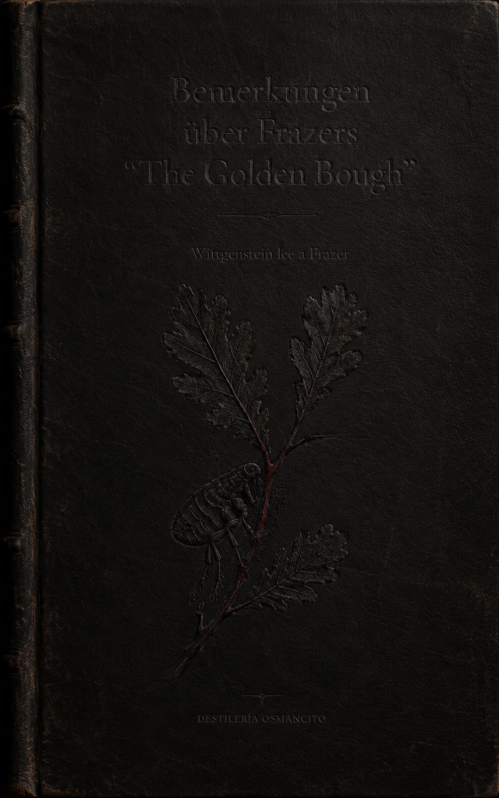
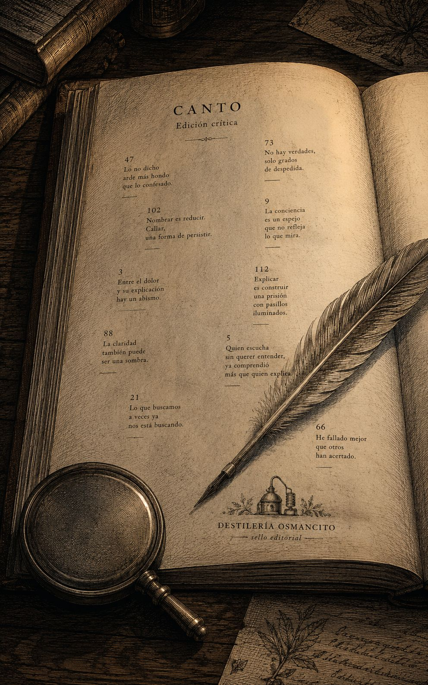
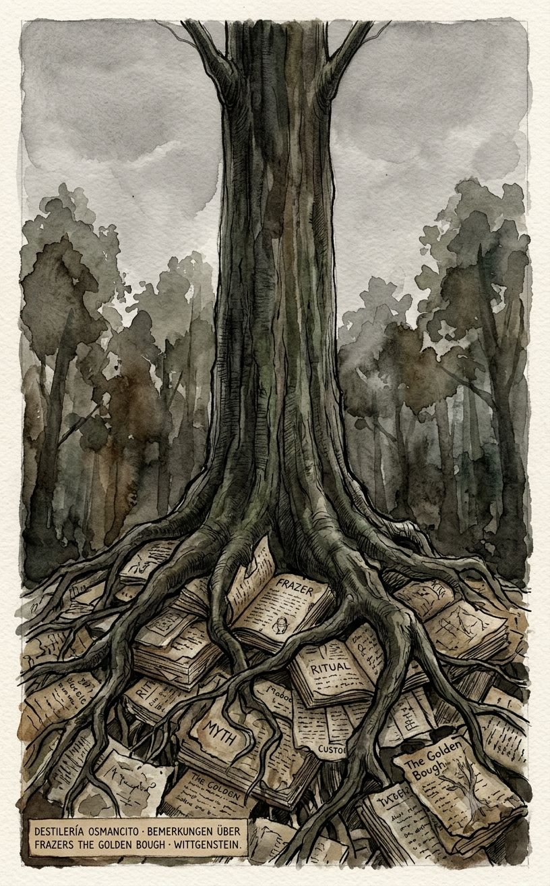
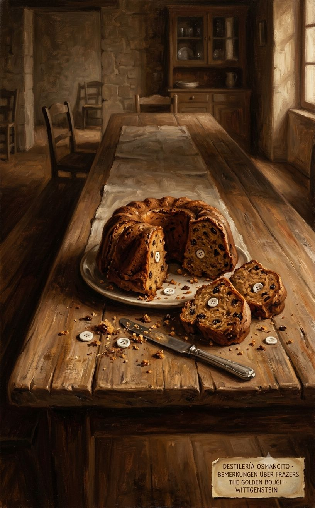
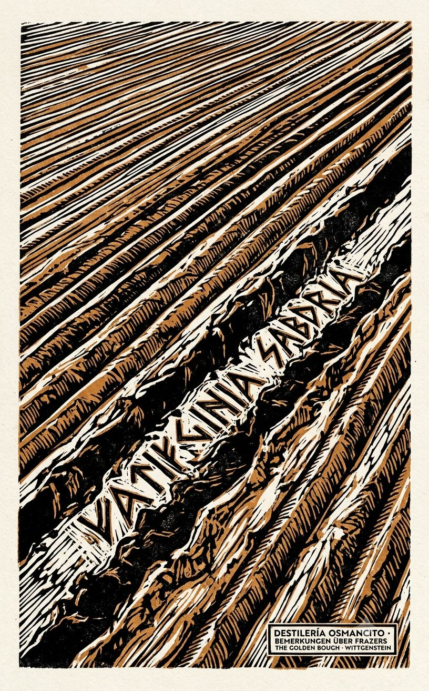
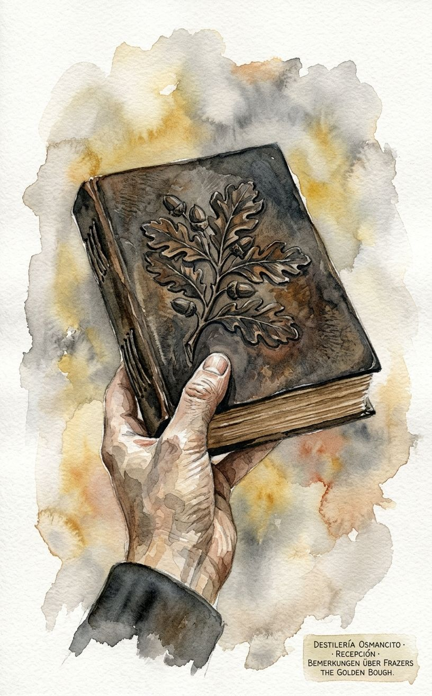
Un hombre que se propuso desmontar las explicaciones de otro termina sin escribir ninguna explicación propia. Wittgenstein no refuta a Frazer punto por punto: le quita el suelo bajo los pies, mostrando que llamar “error” a un rito es ya el primer error, el único. Lo que queda no es una tesis sobre la magia, sino un método para no necesitar una.
Llega como un cuaderno de trabajo, no como un libro: fragmentos numerados, tachaduras visibles, variantes entre barras —//así//— que el propio texto no resolvió antes de que su autor lo abandonara.
Esto no es un tratado contra Frazer. Es un hombre leyendo a otro hombre y, en el margen de esa lectura, escribiendo otra cosa —notas que no se citan unas a otras, que no avanzan hacia conclusión, que vuelven sobre el mismo rey-sacerdote de Nemi una y otra vez como quien vuelve a tocar una piedra para comprobar que sigue fría. Nombrar lo que es este corpus no es resumir lo que dice: es notar que se niega, estructuralmente, a decir algo de una sola vez.
Título — Bemerkungen über Frazers “The Golden Bough” (Observaciones sobre “La rama dorada” de Frazer) Autor — Ludwig Wittgenstein Año — 1931 (redacción; publicación póstuma, 1967) Género — Notas filosóficas / fragmento crítico Extensión estimada — 5.898 palabras, aproximadamente 24 páginas (250 palabras/página), dos partes (I. Teil, II. Teil) sin división interna en capítulos, organizadas en fragmentos numerados o separados por líneas. Idioma original — Alemán Palabra más frecuente con contenido — Erklärung (explicación). Coincide exactamente con lo que el corpus declara combatir: no es un accidente léxico, es el centro de gravedad del texto entero. Wittgenstein no deja de nombrar aquello que está desmontando.
Wittgenstein lee La rama dorada de James Frazer y objeta su método: explicar los ritos primitivos como errores de física o de causalidad ingenua. Contra eso, propone que la “profundidad” de un rito no está en su causa histórica sino en su parentesco con instintos que el propio lector reconoce en sí mismo. El argumento avanza por el caso del rey-sacerdote de Nemi, el roble venerado, la fiesta de Beltane y el pastel sorteado con botones, sin nunca cerrarse en una tesis única.
— Ludwig Wittgenstein: autor de las notas, filósofo, lector irritado y fascinado de Frazer. — James Frazer: antropólogo escocés, autor de The Golden Bough, blanco constante de la crítica del texto, nunca citado con simpatía pero tampoco descartado del todo. — El rey-sacerdote de Nemi: figura ritual recurrente, encarnación de “la majestad de la muerte”. — Agustín de Hipona: mencionado como contraejemplo —su fe no es, para Wittgenstein, un error.
El texto no narra: argumenta en fragmentos. Wittgenstein abre acusando a Frazer de tratar la magia y la religión como errores de juicio sobre el mundo físico. Sostiene que ningún rito religioso o mágico nace de una opinión falsa, sino de una inclinación —un instinto— que también habita en el lector moderno, razón por la cual la explicación histórica nunca satisface del todo. Desarrolla esto a través del rey-sacerdote de Nemi, cuya muerte ritual no se explica sino que se reconoce en la frase “la majestad de la muerte”. Examina el vocabulario inglés —ghost, shade— como prueba de que el propio lenguaje moderno conserva la mitología que cree haber superado. Propone, frente a la hipótesis de desarrollo histórico, el concepto de “representación perspicua”: ver las conexiones entre los datos sin necesidad de ordenarlos en una línea temporal. La segunda parte del texto se concentra en casos puntuales —el roble, el fuego de Beltane, el pastel con botones— para mostrar que lo “sombrío” de un rito no depende de que su origen violento sea históricamente cierto, sino de algo en el carácter mismo del uso actual. El texto no concluye: se interrumpe en una reflexión sobre la vergüenza física y la pérdida de la voluntad de defenderse.
Primer contacto. El texto no convence por acumulación de evidencia sino por insistencia: vuelve sobre los mismos objetos —el rey, el roble, el pastel— hasta que dejan de parecer ejemplos y empiezan a parecer obsesiones. No hay alivio en la lectura, porque Wittgenstein se niega sistemáticamente a entregar la explicación que el lector, formado por siglos de pensamiento causal, sigue esperando en cada párrafo. Lo que queda al cerrar el texto no es una idea sino una incomodidad precisa: la sospecha de que uno mismo golpea la tierra con el bastón sin creer que la tierra tenga culpa.
— Explicar versus reconocer: el texto no pregunta si las explicaciones de Frazer son correctas, sino si explicar es siquiera la operación adecuada frente a un rito. — La distancia que se rehúsa a sostenerse: cada vez que Wittgenstein señala la “estupidez” o el “salvajismo” de un pueblo lejano, el texto se vuelve para mostrar que el lector contemporáneo hace exactamente lo mismo —golpea la tierra, besa un retrato, teme un nombre. — Profundidad sin origen verificable: ¿de dónde viene lo “sombrío” de un uso si su historia real puede ser trivial o falsa? El texto trabaja esa pregunta sin resolverla, porque resolverla —sospecha— sería volver a cometer el error de Frazer.
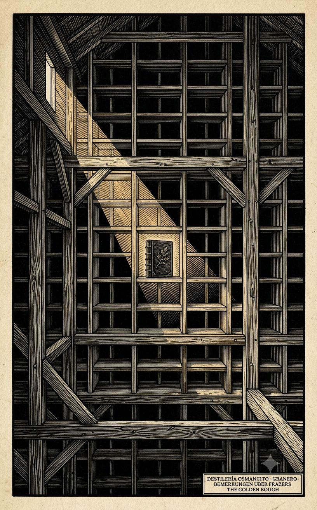
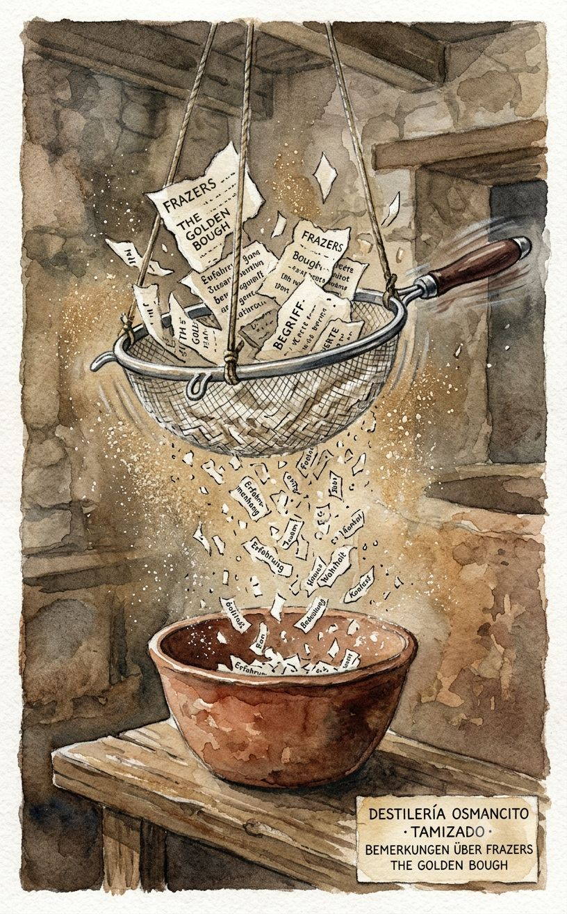
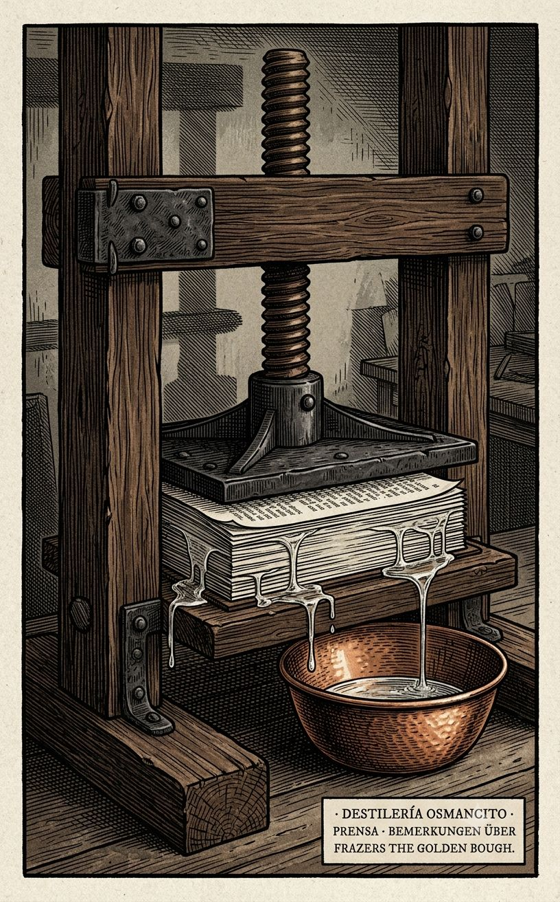
Epítome al 45%
Creo ahora que sería correcto comenzar mi libro con observaciones sobre la metafísica como una especie de magia. En lo cual no debo ni hacer apología de la magia, ni burlarme de ella. De la magia debería conservarse la profundidad. La eliminación de la magia tiene aquí el carácter de la magia misma. Pues si yo comenzara a hablar del “mundo” (y no de este árbol o mesa) ¿qué otra cosa querría sino encerrar algo más elevado en mis palabras?
Hay que partir del error y conducirlo a la verdad. Es decir, hay que descubrir la fuente del error, de otro modo no nos sirve de nada oír la verdad. Ella no puede penetrar mientras otra cosa ocupe su lugar. Para convencer a alguien de la verdad no basta con constatar la verdad, sino que hay que encontrar el camino del error a la verdad. Debo sumergirme repetidamente en el agua de la duda.
La exposición de Frazer de las concepciones mágicas y religiosas de los hombres es insatisfactoria: hace aparecer estas concepciones como errores. ¿Estaba entonces Agustín en el error, cuando invoca a Dios en cada página de las Confesiones? Pero ninguno de ellos estaba en el error. Salvo donde formulaba una teoría.
Ya la idea de querer explicar el uso —digamos, la muerte del rey-sacerdote— me parece errada. Todo lo que Frazer hace es hacerlo plausible a hombres que piensan de manera similar a él. Es muy curioso que todos estos usos sean finalmente presentados, por así decirlo, como tonterías. Nunca resulta plausible que los hombres hagan todas estas cosas por pura estupidez.
Cuando él nos explica que el rey debía ser matado en su plenitud porque, según las concepciones de los salvajes, de otro modo su alma no se conservaría fresca, solo se puede decir: donde aquel uso y esta concepción coinciden, allí no surge el uso de la concepción, sino que ambos están ahí. Puede ocurrir, y ocurre hoy a menudo, que un hombre abandone un uso después de haber reconocido un error en el que se apoyaba este uso. Pero este caso solo se da donde basta con hacer notar al hombre su error para apartarlo de su modo de actuar. Pero esto no es el caso en los usos religiosos de un pueblo, y por eso precisamente no se trata de ningún error.
Frazer dice que es muy difícil descubrir el error en la magia —y por eso se mantiene tanto tiempo— porque, por ejemplo, un conjuro que debe traer lluvia, antes o después aparece como eficaz. Pero entonces es curioso que los hombres no caigan antes en la cuenta de que de todos modos antes o después llueve.
Creo que la empresa de una explicación ya está errada porque solo hay que reunir correctamente lo que se sabe, y no añadir nada, y la satisfacción que se busca mediante la explicación se produce por sí misma. Y no es la explicación la que aquí satisface. Cuando Frazer comienza y nos cuenta la historia del rey del bosque de Nemi, lo hace en un tono que muestra que siente y quiere hacernos sentir que aquí ocurre algo extraño y terrible. Pero la pregunta “¿por qué ocurre esto?” queda en realidad respondida así: porque es terrible. Es decir, eso mismo que en este proceso nos parece terrible, grandioso, espeluznante, trágico, nada menos que trivial e insignificante, eso ha hecho nacer este proceso.
Solo se puede describir aquí y decir: así es la vida humana. La explicación, en comparación con la impresión que nos produce lo descrito, es demasiado insegura. Toda explicación es justamente una hipótesis. Pero a quien la inquieta el amor, una explicación hipotética le ayudará poco. No lo tranquilizará. El tumulto de pensamientos que no pueden salir porque todos quieren adelantarse y así se atascan en la salida.
Si se junta aquel relato del rey-sacerdote de Nemi con la palabra “la majestad de la muerte”, se ve que ambos son uno. La vida del rey-sacerdote representa lo que con aquella palabra se quiere decir. Quien está poseído por la majestad de la muerte puede expresarlo mediante tal vida. Esto naturalmente tampoco es una explicación, sino que solo pone un símbolo por otro. O: una ceremonia por otra. A un símbolo religioso no le subyace ninguna opinión. Y solo a la opinión le corresponde el error.
Las acciones religiosas, o la vida religiosa del rey-sacerdote, no son de ningún otro tipo que cualquier acción genuinamente religiosa de hoy, digamos, una confesión de los pecados. También esta se puede “explicar” y no se puede explicar. Quemar en efigie. Besar el retrato de la amada. Esto naturalmente no se basa en una creencia en un efecto determinado sobre el objeto que el retrato representa. Apunta a una satisfacción y la alcanza también. O más bien, no apunta a nada; simplemente actuamos así y nos sentimos satisfechos.
El mismo salvaje que, al parecer para matar a su enemigo, atraviesa su imagen, construye realmente su choza de madera y talla su flecha con maestría, y no en efigie. La idea de que se puede hacer venir hacia sí un objeto inanimado, como se hace venir hacia sí a un hombre. Aquí el principio es el de la personificación. Y siempre la magia se basa en la idea del simbolismo y del lenguaje. La representación de un deseo es, eo ipso, la representación de su cumplimiento. Pero la magia trae un deseo a la representación; expresa un deseo.
El bautismo como lavado. Un error surge solo cuando la magia es interpretada científicamente. Si la adopción de un niño ocurre de manera que la madre lo hace pasar por sus vestidos, es entonces una locura creer que aquí hay un error y que ella cree haber dado a luz al niño.
De las operaciones mágicas hay que distinguir aquellas que se basan en una representación falsa, demasiado simple, de las cosas y procesos. Cuando se dice que la enfermedad se traslada de una parte del cuerpo a otra, o se toman precauciones para desviar la enfermedad, como si fuera un líquido o un estado de calor. Se forma entonces una imagen falsa, es decir, aquí, inexacta.
¡Qué estrechez de la vida del alma hay en Frazer! Por eso: ¡qué imposibilidad de concebir otra vida que la inglesa de su tiempo! Frazer no puede imaginarse un sacerdote que no sea, en el fondo, un párroco inglés de nuestro tiempo, con toda su estupidez y languidez.
¿Por qué no habría de ser sagrado para el hombre su propio nombre? Es, por un lado, el instrumento más importante que se le da, por otro, como una joya que se le cuelga al nacer. Lo equivocadas que son las explicaciones de Frazer se ve, creo, en que se podrían inventar usos primitivos por uno mismo muy bien, y sería una casualidad si no se encontraran realmente en alguna parte. Es decir, el principio según el cual estos usos están ordenados es mucho más general de lo que Frazer explica, y está presente en nuestra propia alma, de modo que podríamos pensar nosotros mismos todas las posibilidades.
Lo ceremonial (caliente o frío) en oposición a lo casual (tibio) caracteriza la piedad. Las explicaciones de Frazer no serían en absoluto explicaciones, si no apelaran, en última instancia, a una inclinación en nosotros mismos.
El comer y el beber están unidos a peligros, no solo para el salvaje, sino también para nosotros; nada más natural que querer protegerse de ellos; y ahora podríamos pensar nosotros mismos tales medidas de protección. ¿Pero según qué principio las pensamos? Evidentemente según que todos los peligros, en su forma, se reduzcan a algunos muy simples, que son visibles para el hombre sin más. Es decir, según el mismo principio según el cual la gente inculta entre nosotros dice que la enfermedad se traslada de la cabeza al pecho, etc.
Cómo podría el fuego, o la semejanza del fuego con el sol, haber dejado de producir una impresión en el espíritu humano que despierta. Pero no quizás “porque no puede explicárselo” —la superstición tonta de nuestro tiempo—, pues ¿se vuelve menos impresionante por una “explicación”?
Nada es tan difícil como hacer justicia a los hechos. No creo que precisamente el fuego deba producir una impresión en todos. Pues ningún fenómeno es en sí mismo particularmente misterioso, pero cualquiera puede llegar a sernos así, y eso es precisamente lo característico del espíritu que despierta en el hombre, que un fenómeno se le vuelve significativo. Casi se podría decir que el hombre es un animal ceremonial.
Es decir, se podría comenzar así un libro sobre antropología: si se observa la vida y el comportamiento de los hombres sobre la tierra, se ve que ellos, además de las acciones que se podrían llamar animales, la ingesta de alimentos, etc., etc., también ejecutan acciones que llevan un carácter completamente distinto, peculiar, y que podrían llamarse acciones rituales.
Pero es un sinsentido continuar diciendo que lo característico de estas acciones es que surgen de concepciones erróneas sobre la física de las cosas. Más bien lo característico de la acción ritual no es ninguna visión, opinión, sea correcta o falsa, aunque una opinión —una creencia— puede ser en sí misma también ritual, puede pertenecer al rito.
Debemos arar el lenguaje entero. Frazer: “…que estas observancias están dictadas por el miedo al fantasma del muerto parece cierto…” Pero ¿por qué usa Frazer entonces la palabra “ghost”? Comprende él, pues, muy bien esta superstición, ya que nos la explica con una palabra supersticiosa que le es familiar. O más bien, podría haber visto en ello que también en nosotros algo habla a favor de aquellos modos de actuar de los salvajes.
Frazer sería capaz de creer que un salvaje muere por error. En los libros de lectura de escuela primaria está escrito que Atila emprendió sus grandes campañas guerreras porque creía poseer la espada del dios del trueno. Frazer es mucho más salvaje que la mayoría de sus salvajes, pues estos no estarán tan lejos de la comprensión de un asunto espiritual como un inglés del siglo veinte. Sus explicaciones de los usos primitivos son mucho más groseras que el sentido mismo de estos usos.
La explicación histórica, la explicación como hipótesis del desarrollo, es solo un tipo de resumen de los datos —su sinopsis. Es igualmente posible ver los datos en su relación recíproca y resumirlos en una imagen general, sin hacerlo en forma de una hipótesis sobre el desarrollo temporal.
El concepto de la representación perspicua es de importancia fundamental para nosotros. Designa nuestra forma de representación, el modo como vemos las cosas. Esta representación perspicua transmite la comprensión, que consiste justamente en que “vemos las conexiones”. De ahí la importancia del hallazgo de eslabones intermedios.
Un eslabón intermedio hipotético no debe hacer en este caso otra cosa que dirigir la atención hacia la semejanza, la conexión, de los hechos. Como cuando se quisiera ilustrar una relación interna de la forma circular con la elipse llevando gradualmente una elipse a un círculo; pero no para afirmar que una elipse determinada surgió efectivamente, históricamente, de un círculo, sino solo para agudizar nuestra mirada hacia una conexión formal.
Pero también la hipótesis del desarrollo puedo verla como nada más que la forma de presentar una conexión formal. Quisiera decir: nada muestra mejor nuestro parentesco con aquellos salvajes que el que Frazer tenga a mano una palabra tan familiar para él y para nosotros como “ghost” o “shade”, para describir las opiniones de esta gente.
En nuestro lenguaje está depositada toda una mitología. Expulsar la muerte o matar la muerte; pero por otro lado se la representa como esqueleto, así pues, en cierto sentido, ella misma muerta. “As dead as death.” “Nada es tan muerto como la muerte; nada tan bello como la belleza misma.” La imagen bajo la cual aquí se piensa la realidad es que la belleza, la muerte, etc., son la sustancia pura (concentrada), mientras que en un objeto bello están presentes como mezcla.
En los antiguos ritos tenemos el uso de un lenguaje gestual sumamente desarrollado. Y cuando leo en Frazer, querría decir a cada paso: todos estos procesos, estos cambios de significado, los tenemos todavía ante nosotros en nuestro propio lenguaje verbal.
Podría imaginarme que hubiera tenido la elección de elegir un ser de la tierra como morada para mi alma, y que mi espíritu hubiera elegido esta criatura insignificante como su sede y punto de mirada. Quizá porque le repugnaría la pretensión de un sitio bello. Para esto, ciertamente, el espíritu tendría que estar muy seguro de sí mismo.
Correcto es decir que cada vista es significativa para quien la ve como significativa. Sí, en este sentido, cada vista es igualmente significativa. Es importante que yo también deba hacer mío el desprecio del otro, como una parte esencial y significativa del mundo visto desde mi lugar.
Que el sentimiento que tenemos por nuestra vida sea comparable con el de un ser tal, que pudiera elegir su punto de vista en el mundo, subyace, creo, al mito —o a la creencia— de que habríamos elegido nuestro cuerpo antes del nacimiento.
Creo que lo característico del hombre primitivo es que no actúa por opiniones (contra Frazer). Leo, entre muchos ejemplos similares, de un rey de la lluvia en África, al que la gente pide lluvia cuando llega la temporada de lluvias. Pero esto quiere decir que en realidad no piensan que él pueda hacer llover, pues de otro modo lo harían en las temporadas secas del año.
Cuando estoy enojado por algo, a veces golpeo con mi bastón el suelo o un árbol, etc. Pero no creo que la tierra tenga culpa, ni que el golpear pueda ayudar en algo. “Dejo salir mi ira.” Y de esta clase son todos los ritos. Tales acciones se pueden llamar acciones-instinto. Una explicación histórica, digamos que yo antes o mis antepasados antes creían que golpear la tierra ayudaba en algo, son falsas pistas, pues son suposiciones superfluas que nada explican. Lo importante es la semejanza del acto con un acto de castigo, pero más allá de esta semejanza nada se puede constatar.
Si un fenómeno tal queda relacionado una vez con un instinto que yo mismo poseo, esto es entonces precisamente la explicación deseada; es decir, la que resuelve esta dificultad particular. Y una investigación posterior sobre la historia de mi instinto se mueve ya por otros caminos.
Ningún motivo escaso, es decir, en absoluto ningún motivo, puede haber sido lo que hizo que ciertas razas humanas veneraran al roble, sino solo el que ellos y el roble estuvieran unidos en una comunidad de vida, es decir, no por elección sino, como la pulga y el perro, unidos en su origen. Se podría decir que no su unión (de roble y hombre) dio la ocasión a estos ritos, sino quizás, en cierto sentido, su separación. Pues el despertar del intelecto va acompañado de una separación del suelo originario, del fundamento originario de la vida. (El surgimiento de la elección.) La forma del espíritu que despierta es la veneración.
Esto naturalmente no es así, que el pueblo crea que el gobernante tiene estas fuerzas, mientras el gobernante sabe muy bien que no las tiene, o solo no lo sabe cuando es un necio o un tonto. Sino que la noción de su poder está naturalmente ya tan dispuesta que pueda concordar con la experiencia —del pueblo y la suya.
Cuando un hombre en nuestra sociedad ríe demasiado, aprieto a medias involuntariamente los labios, como si creyera poder así mantener cerrados los suyos.
El sinsentido aquí es que Frazer lo presenta como si estos pueblos tuvieran una concepción completamente falsa, hasta demente, del curso de la naturaleza, cuando solo poseen una interpretación curiosa de los fenómenos. Es decir, su conocimiento de la naturaleza, si lo hubieran escrito, no se distinguiría fundamentalmente del nuestro. Solo su magia es diferente.
Tan simple como suena: la diferencia entre magia y ciencia puede expresarse en que en la ciencia hay un progreso, pero no en la magia. La magia no tiene una dirección de desarrollo que resida en sí misma.
Cuánta más verdad hay en que se atribuya al alma la misma multiplicidad que al cuerpo, que en una teoría moderna diluida. Frazer no advierte que aquí tenemos ante nosotros la doctrina de Platón y de Schopenhauer. Todas las teorías infantiles las encontramos de nuevo en la filosofía actual; solo que sin lo entrañable de lo infantil.
Lo más llamativo me parecería, además de las semejanzas, la diversidad de todos estos ritos. Es una multiplicidad de rostros con rasgos comunes que aparecen aquí y allá una y otra vez. Y lo que se querría hacer es trazar líneas que unan los componentes comunes. Falta entonces todavía una parte de la consideración, y es aquella que pone esta imagen en relación con nuestros propios sentimientos y pensamientos. Esta parte le da a la consideración su profundidad.
Nada habla a favor de por qué el fuego debería estar rodeado de tal nimbo. Y, qué extraño, ¿qué significa propiamente “parecía haber venido del cielo”? ¿de qué cielo? No, no es en absoluto evidente que el fuego sea considerado así; pero se lo considera precisamente así.
Aquí parece que la hipótesis recién le da profundidad a la cosa. Es claro que lo que da profundidad a este uso es su conexión con el quemar a un hombre. Si en alguna fiesta fuera costumbre que los hombres cabalgaran unos sobre otros, no veríamos en ello más que una forma de cargar, que recuerda el cabalgar del hombre sobre un caballo; pero si supiéramos que entre muchos pueblos era costumbre usar esclavos como animales de montar, y así celebrar a caballo ciertas fiestas, entonces descubriríamos en el uso inocente de nuestro tiempo algo más profundo y menos inocente.
Creo que es evidentemente la naturaleza interior del uso moderno mismo la que nos parece sombría, y los hechos conocidos de sacrificios humanos solo indican la dirección en que debemos mirar el uso. Cuando hablo de la naturaleza interior del uso, me refiero a todas las circunstancias en que se practica, y que no están contenidas en el informe de tal fiesta, ya que no consisten tanto en acciones determinadas que caracterizan la fiesta, sino en lo que se podría llamar el espíritu de la fiesta. Y se vería entonces que lo sombrío reside en el carácter mismo de estos hombres.
Aquí algo parece como los restos de un sorteo. Y por este aspecto gana de pronto profundidad. Si supiéramos que el pastel con los botones fue horneado, en un caso determinado, “originalmente” en honor de un fabricante de botones “en su cumpleaños”, y que el uso se conservó luego en la región, este uso perdería en realidad toda “profundidad”, salvo que reside en su forma actual misma. Pero se dice en tal caso a menudo: “este uso es evidentemente muy antiguo.” ¿Cómo se sabe eso? ¿Es solo porque se tiene testimonio histórico sobre usos antiguos de este tipo? ¿O hay aún otro motivo, uno que se obtiene por interpretación? Pero también, si el origen prehistórico del uso y su descendencia de un uso sombrío están históricamente probados, es sin embargo posible que el uso hoy ya no tenga nada de sombrío en sí, que nada del horror prehistórico haya quedado pegado a él.
Entonces lo profundo reside solo en el pensamiento de aquella descendencia. ¿Pero de dónde la certeza de que tal uso deba ser muy antiguo? ¿Tenemos pues una certeza, no podemos equivocarnos en ello y quedar refutados históricamente por el error? Ciertamente, pero queda entonces todavía algo de lo que estamos seguros. Diríamos entonces: “bien, en este caso particular el origen puede ser otro, pero en general es ciertamente el prehistórico”. Lo que sea para nosotros evidencia de esto debe contener la profundidad de esta suposición. Y esta evidencia es a su vez una psicológica no hipotética.
Quiero decir: lo sombrío, lo profundo no reside en que con la historia de este uso se haya dado así, pues quizás no se dio así; tampoco en que tal vez o probablemente se haya dado así, sino en aquello que me da motivo para suponerlo. ¿De dónde viene, pues, lo profundo y sombrío en el sacrificio humano? ¿Son solo los sufrimientos de la víctima los que nos producen esta impresión? Enfermedades de todo tipo, ligadas a tantos sufrimientos, no provocan sin embargo esta impresión. No, esto profundo y sombrío no se entiende por sí mismo cuando solo conocemos la historia de la acción exterior, sino que nosotros lo llevamos de nuevo hacia adentro a partir de una experiencia en nuestro interior.
El hecho de que el sorteo se haga mediante un pastel tiene también algo particularmente terrible (casi como la traición mediante un beso), y que esto nos parezca particularmente terrible tiene a su vez un significado esencial para la investigación de tales usos.
Es, cuando veo tal uso, cuando oigo hablar de él, como cuando veo a un hombre que, ante una ocasión insignificante, habla con severidad a otro, y por el tono de la voz y el rostro percibo que este hombre, dada la ocasión, puede ser terrible. La impresión que recibo aquí puede ser muy profunda y extraordinariamente seria. El entorno de un modo de actuar.
Una suposición subyace en todo caso a las suposiciones sobre el origen de la fiesta de Beltane —por ejemplo—, y es que tales fiestas no son inventadas por un hombre, así por así, sino que necesitan una base infinitamente más amplia para mantenerse. Si yo quisiera inventar una fiesta, pronto se extinguiría, o bien sería modificada de tal manera que correspondiera a una inclinación general de la gente.
¿Pero qué se opone a suponer que la fiesta de Beltane fue siempre celebrada en su forma actual (o la más reciente pasada)? Se querría decir: es demasiado sin sentido para haber sido inventada así. ¿No es como cuando veo una ruina y digo: esto debió ser una vez una casa, pues nadie construiría un montón así de piedras labradas e irregulares?
Pero esto no es simplemente el pensamiento del posible origen de la fiesta de Beltane lo que conlleva la impresión, sino lo que se querría llamar la enorme probabilidad de este pensamiento. Como aquello que está tomado del material.
Así como la fiesta de Beltane nos ha llegado, es ciertamente un espectáculo y semejante a cuando los niños juegan a ladrones. Pero no obstante no así. Pues aunque esté arreglado que el partido que rescata a la víctima gane, lo que ocurre tiene todavía un añadido de temperamento que la mera representación teatral no tiene.
Igualmente, que los niños quemen en ciertos días un hombre de paja, aunque no se dé ninguna explicación para ello, podría inquietarnos. ¡Extraño que un hombre debiera ser quemado festivamente por ellos! Quiero decir: la solución no es más inquietante que el enigma.
¿Por qué no debería ser realmente solo, o al menos en parte, el pensamiento lo que me da la impresión? ¿No son acaso terribles las representaciones? ¿No puedo sentir escalofríos ante el pensamiento de que el pastel con los botones sirvió una vez para sortear el sacrificio de muerte? ¿No tiene el pensamiento algo terrible? Sí, pero lo que veo en aquellos relatos lo ganan ellos por la evidencia, también por aquella que no parece estar directamente conectada con ello, por el pensamiento del hombre y su pasado, por todo lo extraño que veo en mí y en el otro, que he visto y oído.
Todos estos diversos usos muestran que aquí no se trata de la descendencia de uno respecto del otro, sino de un espíritu común. Y se podrían inventar (poetizar) todas estas ceremonias por uno mismo. Y el espíritu del cual se las inventaría sería precisamente su espíritu común.
La conexión de enfermedad y suciedad. “Purificarse de una enfermedad.” Ofrece una sencilla teoría infantil de la enfermedad, que es una suciedad que se puede lavar. Así como hay “teorías sexuales infantiles”, así hay en general teorías infantiles. Esto no quiere decir que todo lo que un niño hace haya surgido de una teoría infantil como su motivo. Lo correcto e interesante no es decir esto surgió de aquello, sino: podría haber surgido así.
Que el fuego se usara para la purificación es claro. Pero nada puede ser más probable que el que los hombres pensantes hayan relacionado más tarde con el sol las ceremonias de purificación, también donde originalmente solo se hubieran pensado como tales. Si a un hombre se le impone un pensamiento (fuego-purificación) y a otro otro (fuego-sol), ¿qué puede ser más probable que ambos pensamientos se impongan a un mismo hombre? ¡Los eruditos, que siempre quisieran tener una sola teoría!
La destrucción total mediante el fuego, distinta de la destrucción por romper, desgarrar, etc., debe haber llamado la atención de los hombres.
Eso indicaría que aquí subyace una verdad y no una superstición. Pero puede muy bien ser que el cuerpo completamente depilado nos induzca, en algún sentido, a perder el respeto por nosotros mismos. No hay duda de que una mutilación que nos hace parecer indignos, ridículos, ante nuestros propios ojos, puede quitarnos toda voluntad de defendernos. Qué avergonzados nos sentimos a veces —o al menos muchos hombres (yo)— por nuestra inferioridad física o estética.
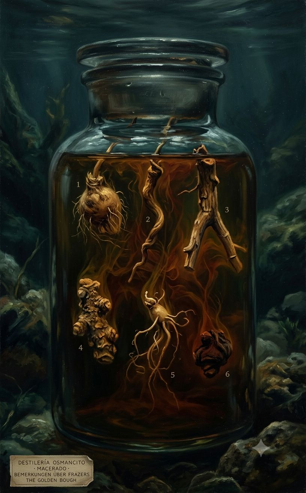
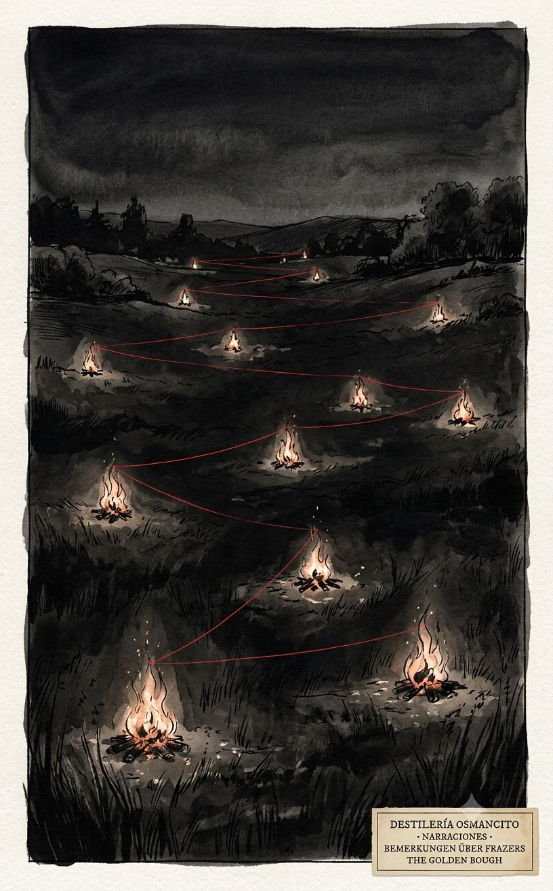
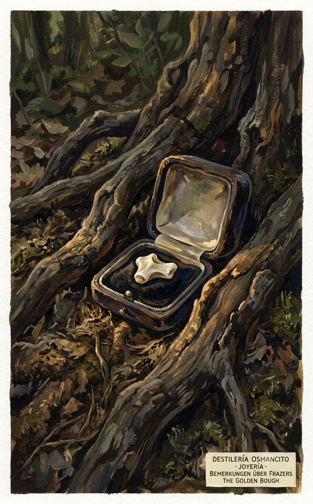
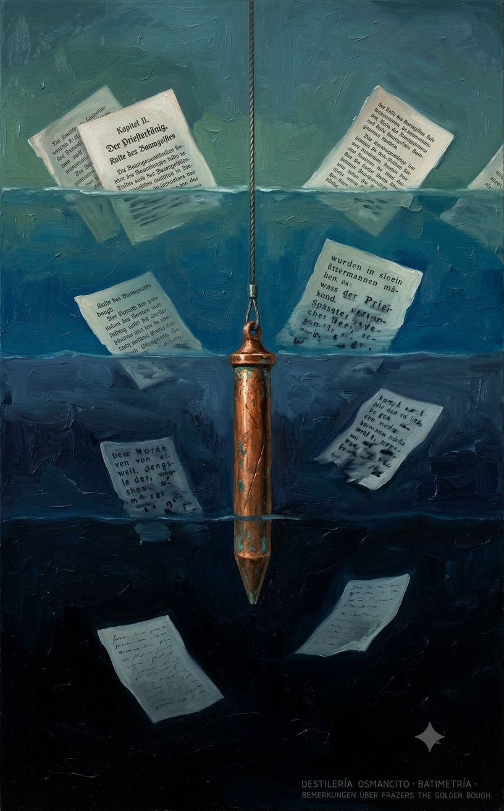
Lo que parece un ataque sostenido contra Frazer esconde, sin nombrarla nunca, una autobiografía: cada vez que Wittgenstein señala la estupidez del antropólogo, está describiendo su propio temor a explicar de más. Y lo que el texto jamás dice —ni una sola vez en casi seis mil palabras— es qué reemplaza a la explicación si no se explica.
Vivo — La crítica explícita al método de Frazer está en superficie, repetida sin disimulo: explicar un rito como error de física es un error categorial, no un hallazgo. También vivo: la lista de ejemplos —el rey de Nemi, el roble, el pastel con botones, la fiesta de Beltane— que el texto nombra una y otra vez sin necesidad de excavarlos.
Sepultado — La posición filosófica positiva de Wittgenstein —qué debería hacer un observador en lugar de explicar— está presente pero dispersa en docenas de fragmentos que nunca se reúnen en una declaración única. Aparece como “representación perspicua”, como “eslabón intermedio”, como “reconocer un instinto propio”, pero el texto se resiste a fusionar estos términos en una doctrina. Hay que presionar el corpus completo para que el método emerja como tal.
Cifrado — El texto opera, sin nombrarlo nunca, sobre la diferencia entre comprender y explicar que más tarde estructurará buena parte de la filosofía del lenguaje del propio Wittgenstein: los “juegos de lenguaje”, el “parecido de familia”, están aquí en germen bajo la forma de “espíritu común” y “representación perspicua”. Se ofrece esto como propuesta de lectura, no como hecho declarado por el texto.
Borrado — Hay un argumentum ad hominem contra Frazer —llamarlo “más salvaje que sus salvajes”, acusarlo de no poder imaginar otra vida que la inglesa de su época— que aparece con fuerza y después se atenúa: el texto nunca vuelve a atacar con esa intensidad personal, como si el propio Wittgenstein hubiera notado el exceso y lo hubiera dejado enfriar sin borrarlo del todo. La cicatriz queda en esos pocos párrafos iniciales.
Ausente — El texto no ofrece, en ningún punto, una explicación alternativa positiva y completa de por qué los ritos tienen el peso que tienen. Rechaza la explicación causal de Frazer pero no construye una explicación causal propia ni se compromete del todo con abandonar toda explicación: queda suspendido entre el rechazo y la alternativa, y esa alternativa —prometida implícitamente desde el primer párrafo— nunca llega a formularse como sistema.
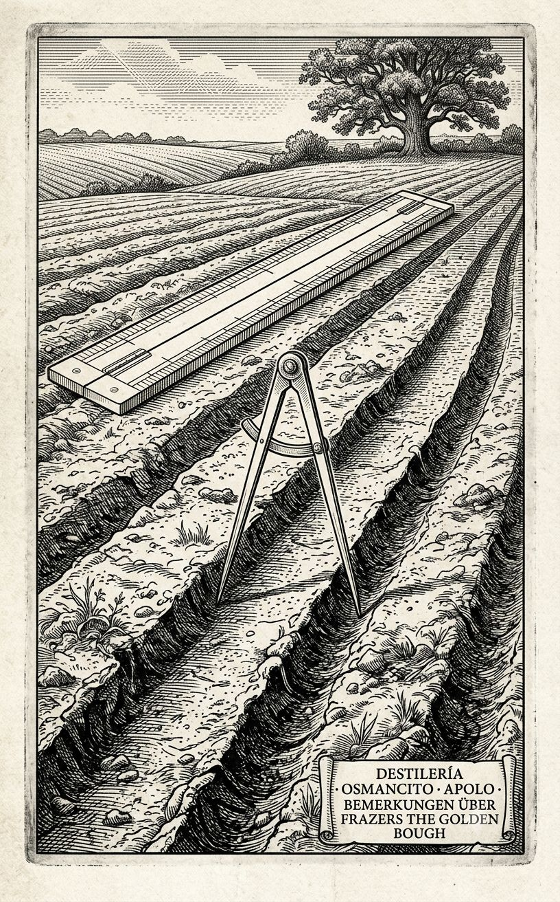
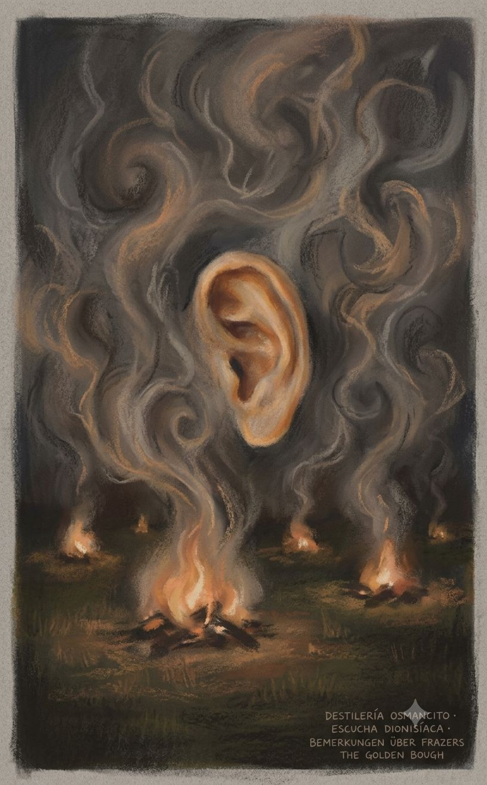
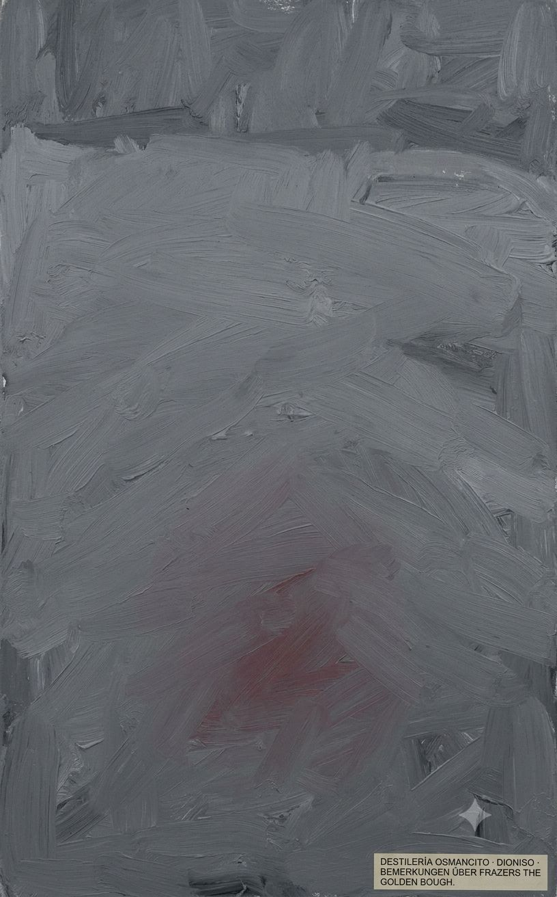
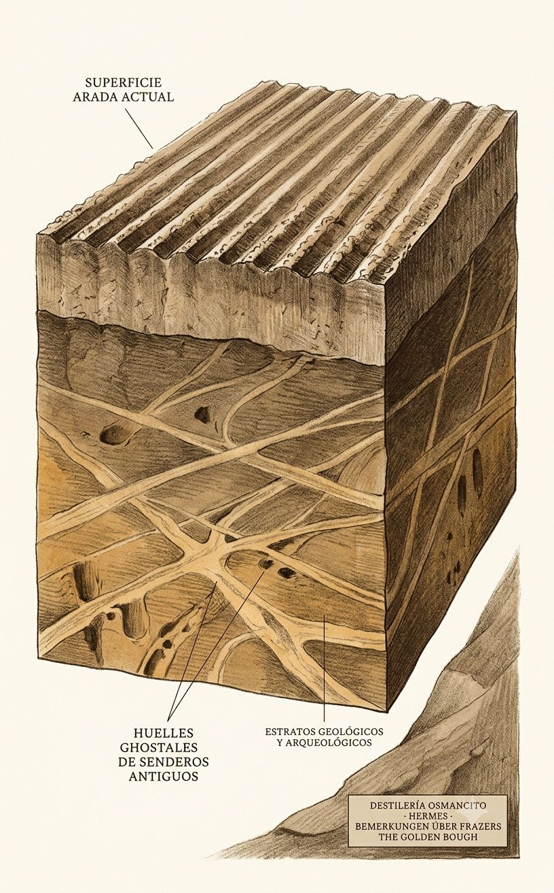
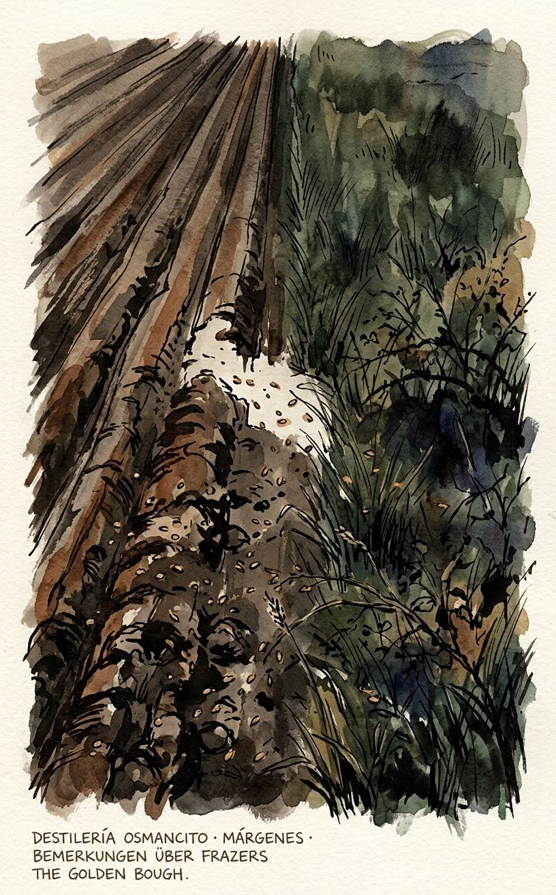
El texto pierde, en algún punto entre el primer y el segundo “Teil”, su propia ferocidad inicial contra Frazer — y nadie lo nota porque Wittgenstein nunca declara que se ha calmado. Lo que el corpus no pudo contener fue su propia conclusión positiva; lo que no pudo retener fue su silencio, porque medio siglo de filosofía del lenguaje terminó siendo, en buena parte, la explicitación de lo que aquí solo se intuye.
Apertura, primeros fragmentos — la ferocidad personal contra Frazer Tipo — personal / metodológico. Cómo ocurre — el corpus no lo declara. Los primeros párrafos llaman a Frazer “más salvaje que sus salvajes”, lo acusan de no poder imaginar otra vida que la inglesa de su tiempo. Esa intensidad acusatoria desaparece progresivamente: en la segunda parte, las menciones a Frazer son casi neutras, casi compasivas. El texto nunca dice “ya no estoy enojado con él” — simplemente deja de estarlo. Escala — pequeña dentro del corpus, pero significativa para entender el tono: lo que empieza como polémica termina como meditación.
A lo largo de todo el texto — la promesa de un método sustitutivo Tipo — intelectual. Cómo ocurre — no declarada. Wittgenstein promete, desde el primer párrafo, que hay una alternativa a explicar los ritos como errores. Llama a esa alternativa “representación perspicua”, “reconocer un instinto”, “ver las conexiones” — pero estos términos aparecen y se disuelven sin nunca consolidarse en un procedimiento replicable. La promesa metodológica se sostiene durante todo el texto y nunca se cobra. Escala — grande dentro del corpus: es la pérdida estructural más importante, la que define su carácter fragmentario.
Fragmentos finales — la voz analítica se retira Tipo — metodológico / personal. Cómo ocurre — sin declararlo, el texto pasa de la tercera persona analítica (“Frazer dice”, “el salvaje cree”) a la primera persona vulnerable (“cómo me avergüenzo a veces de mi inferioridad física”). El análisis del otro se convierte, sin transición señalada, en confesión propia. Escala — pequeña en extensión, pero ocupa el lugar de cierre del corpus, lo cual le da peso desproporcionado: es la última nota que el lector retiene.
Tres desapariciones, ninguna biológica ni cultural en sentido estricto: dos metodológicas, dos personales (una entrada cruza ambos tipos). Domina lo metodológico-personal entrelazado — ninguna pérdida es puramente intelectual sin también ser un gesto del autor sobre sí mismo. Las escalas se distribuyen de forma desigual: una pérdida pequeña en tono, una pérdida grande y estructural en el centro, una pérdida pequeña en extensión pero decisiva en posición.
Las pérdidas no se concentran en una zona: la ferocidad se pierde temprano, el método prometido se pierde a lo largo de todo el recorrido sin un punto de quiebre identificable, la voz analítica se pierde al final. El ritmo es de apagamiento progresivo — el texto entra ardiendo y termina susurrando una vulnerabilidad personal. Las pérdidas personales e intelectuales no van desfasadas: ocurren en el mismo movimiento, como si la pérdida del enojo y la pérdida del método fueran la misma erosión vista desde dos ángulos.
Visto en conjunto, el corpus traza la curva de alguien que empezó queriendo corregir a otro y termina por descubrir que no tiene una corrección que ofrecer, solo una vulnerabilidad compartida. Esa es una conclusión sobre el género de la crítica misma —que toda crítica feroz contra un método ajeno puede terminar revelando la propia falta de método— que el texto en ningún momento declara, pero que la suma de sus pérdidas no permite ignorar.
Filosofía del lenguaje posterior de Wittgenstein — intelectual. Naturaleza — el corpus no la produjo directamente, pero la hizo posible: “representación perspicua” y “ver las conexiones” reaparecerán, transformados, en las Investigaciones filosóficas, bajo la forma del “parecido de familia” y los “juegos de lenguaje”. Escala — muy lejos del corpus original: terminó siendo parte del vocabulario central de la filosofía analítica del siglo veinte, sin que este texto específico fuera ampliamente conocido hasta su publicación póstuma.
Antropología interpretativa y crítica del funcionalismo explicativo — metodológico. Naturaleza — el corpus no la produjo, pero antropólogos posteriores —especialmente quienes cuestionaron las explicaciones causales unidimensionales de los ritos— encontraron en estas notas un antecedente filosófico a su propia desconfianza metodológica. Escala — media: citado y discutido en círculos de antropología simbólica e interpretativa, sin convertirse en texto fundacional reconocido del campo.
El propio género del fragmento filosófico inconcluso — estético / metodológico. Naturaleza — el corpus no buscó inaugurar un género, pero su forma —fragmentos numerados, sin conclusión, publicados póstumamente tal cual quedaron— se volvió modelo de cómo leer y valorar el pensamiento inacabado como objeto legítimo, no como borrador a completar. Escala — modesta pero persistente: parte de cómo se edita y valora el archivo filosófico inconcluso en general.
El corpus, al negarse a ofrecer una explicación sustitutiva de la de Frazer, produjo sin buscarlo un modelo de lectura que no necesita resolución: enseñó, contra su propia frustración explícita por no poder concluir, que la falta de conclusión puede ser el aporte mismo. Wittgenstein quería corregir un método y terminó, sin saberlo, legitimando la legitimidad del fragmento como forma de pensar.
Las pérdidas y las irradiaciones no son proporcionales en magnitud pero sí están conectadas en mecanismo: es precisamente porque el corpus perdió su promesa de método sustitutivo —porque no pudo cerrarse en una doctrina— que pudo irradiar tan lejos como herramienta abierta, apropiable por antropólogos, filósofos del lenguaje y lectores del fragmento como género. La pérdida no fue un defecto que la estela superó: fue la condición de la estela misma.
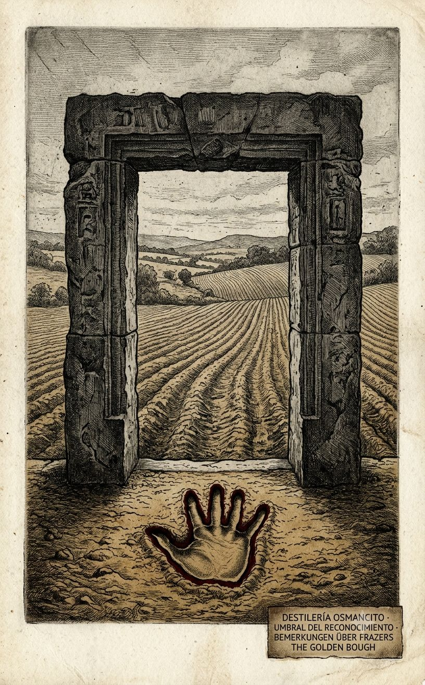
En este corpus nadie reconoce a nadie a través de un argumento: se reconoce a través de un escalofrío. Frazer nunca obtiene el reconocimiento que busca —que sus explicaciones expliquen— porque el único reconocimiento que el texto otorga es el del instinto propio que se ve reflejado en el rito ajeno, y ese reconocimiento no se puede argumentar hacia adentro de alguien que no lo sintió primero.
Apertura — Wittgenstein reconoce (le niega reconocimiento) a Frazer como intérprete Tipo — Intelectual. Forma — Declaración directa: llama “errada” la idea misma de explicar los usos primitivos, acusa a Frazer de estrechez de alma. Condición — Ninguna condición visible permitía a Frazer obtener el reconocimiento que el texto le niega; el umbral estaba cerrado de entrada. Costo — Ninguno para Frazer: él no sabe que se le está negando algo, escribe sin saber que será leído así. Suficiencia — El corpus no lo dice: Wittgenstein nunca pregunta si su crítica fue suficiente, solo la ejerce.
Caso del rey-sacerdote de Nemi — el lector reconoce “la majestad de la muerte” en la vida del rey Tipo — Afectivo / intelectual. Forma — No es declaración sino constatación silenciosa: “se ve que ambos son uno”. El reconocimiento ocurre por yuxtaposición, no por argumento. Condición — Que el lector ya cargue, antes de leer, alguna noción de lo que significa la majestad de la muerte. El texto no la enseña: la presupone reconocible. Costo — Ninguno declarado. El reconocimiento llega sin que el rey-sacerdote ni el lector cedan nada. Suficiencia — Suficiente: el propio texto dice que esto “no es una explicación, sino que pone un símbolo por otro” — y se conforma con eso.
El instinto propio — reconocimiento de la acción del salvaje en la propia acción de golpear la tierra Tipo — Corporal / afectivo. Forma — Reconocimiento por analogía vivida: Wittgenstein golpea su bastón contra el suelo con ira y, en ese gesto, reconoce el mismo mecanismo que atribuye al rito ajeno. Condición — Haber sentido la ira y haber actuado el gesto antes de leer sobre el rito; sin esa experiencia previa, el reconocimiento no tendría dónde anclarse. Costo — Cede la distancia. Reconocer el instinto propio en el salvaje cuesta la superioridad que el lector occidental daba por garantizada. Suficiencia — Suficiente y declarada como tal: el propio texto dice que esta es “la explicación deseada”, la que resuelve la dificultad.
El roble y la pulga — reconocimiento de comunidad de origen sin elección Tipo — Otro (vínculo no contractual, casi biológico). Forma — Reconocimiento negativo: no por elección, sino porque “nacieron juntos”. No es un acto, es una constatación de coexistencia previa a cualquier acto. Condición — Ninguna condición de mérito; el reconocimiento aquí precede a toda cualidad del reconocido. Costo — Ninguno: es el único reconocimiento del corpus que no cobra nada, porque no fue otorgado por nadie —simplemente es. Suficiencia — El corpus no evalúa suficiencia aquí: la pregunta no aplica a un vínculo que no fue solicitado.
Cuatro actos mapeados: uno intelectual-negativo (la negación a Frazer), uno afectivo-intelectual (el rey y la majestad de la muerte), uno corporal-afectivo (el instinto propio), uno relacional sin categoría clara (el roble y la pulga). Domina lo afectivo-corporal sobre lo intelectual puro — esperable dado que el corpus declara, desde el primer párrafo, que de la magia “debe conservarse la profundidad” y no la explicación. La distribución es coherente con lo que el corpus dice ser: un texto que desconfía de la inteligencia como vía de reconocimiento y confía en el cuerpo y el instinto.
Umbral declarado — El corpus nunca declara explícitamente un umbral: no dice “esto es lo que un rito necesita para ser reconocido como profundo en vez de como error”.
Umbral real — En la práctica, el corpus muestra que algo es reconocido como profundo cuando el lector puede encontrar, en su propia vida instintiva, un gesto análogo —golpear la tierra, besar un retrato, temer pronunciar un nombre. Lo que no encuentra eco corporal en el lector queda del lado de lo meramente exótico, sin importar cuán elaborado sea el rito. La divergencia es el hallazgo: el corpus se presenta como crítica metodológica a Frazer, pero opera, en la práctica, con un criterio íntimo y no metodológico en absoluto —reconoce lo que reconoce en sí mismo.
El precio no negociable — El reconocimiento siempre cobra la pérdida de la distancia explicativa. No hay manera, en este sistema, de reconocer la profundidad de un rito y conservar al mismo tiempo la posición de quien lo explica desde afuera. Eso nunca se negocia: explicar y reconocer son, en este corpus, mutuamente excluyentes.
Quién otorga — El poder de reconocer está concentrado enteramente en el lector-observador-filósofo; ningún rito, ningún pueblo, ninguna figura citada tiene voz para reclamar su propio reconocimiento. Frazer tampoco otorga: solo clasifica.
Quién espera — Los ritos mismos, los pueblos descritos por Frazer, y —de forma oblicua— Frazer también espera, sin saberlo, ser reconocido como algo más que un catalogador equivocado.
La brecha — Según los criterios que el propio corpus construye —que la profundidad de un rito está en su parentesco con el instinto humano universal—, los ritos descritos merecerían reconocimiento pleno como expresiones legítimas de algo humano compartido. Lo que reciben en el cuerpo del texto de Frazer, según Wittgenstein, es degradación a “error” o “estupidez”. Esa brecha entre lo que merecen y lo que Frazer les concede es, aunque el corpus no lo declare como motor narrativo —no hay narrativa propiamente—, el motor argumentativo entero del texto.
La inversión — Sí ocurre una inversión, aunque parcial: hacia el final del texto, quien otorgaba el juicio —Wittgenstein examinando ritos ajenos— se convierte en quien necesita reconocimiento sobre su propia vulnerabilidad física y su vergüenza. El que clasificaba termina pidiendo, implícitamente, la misma comprensión que reclamó para el salvaje.
El nombre como joya antes que como derecho — Wittgenstein menciona que el nombre propio es, para el hombre, tan importante como un instrumento y tan precioso como una joya colgada al nacer. Esto opera como reconocimiento previo a cualquier categoría legal o social: el nombre reconoce a quien lo lleva antes de que exista ningún sistema que lo declare. Quien lo otorga es difuso —la lengua misma, la costumbre— y el corpus no indica si el reconocido sabe recibirlo como tal; simplemente lo señala como hecho.
El instinto reconocido en el propio cuerpo antes de cualquier teoría — Cuando Wittgenstein aprieta los labios al ver a alguien reírse demasiado, se reconoce a sí mismo actuando ritualmente antes de tener ninguna categoría —ni mágica ni científica— para nombrar lo que hace. Este es, quizás, el reconocimiento más puro del corpus: ocurre sin testigos, sin lenguaje, y solo se vuelve visible porque el propio Wittgenstein lo reporta después.
El corpus no desarrolla un caso narrativo de reconocimiento que llegue después de la muerte o la transformación irreversible de un personaje —no hay personajes en sentido narrativo. Pero hay un diferido de otro orden: el reconocimiento del propio Wittgenstein como pensador relevante en filosofía del lenguaje, que este texto específico recibiría solo décadas después de escrito, tras su muerte, cuando se publicó póstumamente en 1967.
Cuánto tiempo tardó — Treinta y seis años entre la redacción (1931) y la primera publicación (1967); Wittgenstein murió en 1951, dieciséis años antes de que el texto llegara a sus lectores.
Qué cambió mientras tanto — El propio autor ya no podía revisar, defender o reformular sus notas; quedaron exactamente en el estado fragmentario, tachado y dubitativo en que las dejó, sin la oportunidad de convertirlas en el tratado que en algún punto imaginó escribir.
Si el reconocimiento que llegó es el mismo que se esperaba — No: lo que se reconoció finalmente no fue una teoría acabada sobre la magia, sino precisamente la forma fragmentaria e inconclusa —el cuaderno de trabajo— que el propio Wittgenstein quizás hubiera querido pulir. El reconocimiento llegó para el borrador, no para el libro que el borrador prometía.
La pregunta que el corpus no puede responder — Si ese reconocimiento tardío, dado a las notas sin terminar y no al tratado planeado, valió lo que costó esperar. El corpus no puede responder esto porque el corpus mismo es la evidencia: no sabemos, leyéndolo, si su autor lo habría publicado así. El texto evita la pregunta por el simple hecho de no saber que sería leído después de su propia desaparición.
El intento de reconocimiento que falla con mayor claridad es el de Frazer hacia los pueblos que describe: cree estar otorgándoles comprensión —los explica, los cataloga, los vuelve legibles para el lector inglés— pero, según Wittgenstein, esa forma de reconocimiento llega en el lenguaje equivocado: el de la causalidad física, que no es el lenguaje en el que el rito puede ser recibido como lo que es. El fallo no es del reconocedor en su intención —Frazer cree sinceramente estar dignificando estas prácticas al volverlas comprensibles— ni del reconocido —los ritos no cambian, no piden nada—, sino de las condiciones: el marco explicativo mismo es incompatible con el objeto que intenta reconocer.
Cuando Wittgenstein reconoce, en el instinto propio, el mismo mecanismo que opera en el rito ajeno, algo se destruye: la posición de superioridad civilizatoria que permitía mirar al “salvaje” desde afuera y desde arriba. El corpus sabe que esto se destruye —lo declara explícitamente al decir que Frazer es “más salvaje que sus salvajes”—, y el propio Wittgenstein no parece lamentarlo: la destrucción de esa distancia es, para él, el único camino hacia un reconocimiento honesto. No hay indicio de que el reconocido —el lector occidental, incluido el propio autor— supiera de antemano que reconocer costaría esa posición.
¿Es el reconocimiento en este corpus una constatación o una concesión? Es mayormente una constatación: cuando Wittgenstein reconoce la majestad de la muerte en el rey-sacerdote, o su propio instinto en el gesto del salvaje, no produce nada nuevo —nombra algo que, según el propio texto, ya estaba ahí, “presente en nuestra propia alma”. La excepción es el reconocimiento que Frazer niega a los ritos: ahí sí hay concesión, porque al negárselo Frazer produce —activamente— su degradación a error, algo que no era inherente al rito mismo.
¿Puede el reconocido reconocerse a sí mismo en ausencia del reconocimiento ajeno? El corpus sugiere que sí, y de forma central: el instinto que Wittgenstein identifica en sí mismo no necesita la confirmación de Frazer ni de nadie para existir como tal. De hecho, el argumento entero depende de que el lector pueda reconocerse sin mediación externa —es la prueba que el corpus ofrece contra el método de Frazer: si reconozco mi propio instinto sin que nadie me lo explique, la explicación causal era innecesaria desde el principio.
¿Qué hace el corpus con el reconocimiento que no llegó a tiempo? No lo elabora como tragedia ni como ironía declarada: lo elabora, sin saberlo —porque el corpus no podía saber que sería leído póstumamente—, como condición neutra de su propia existencia. El texto no tiene conciencia de ser un caso de reconocimiento diferido; esa lectura solo es visible desde afuera, para quien conoce su historia editorial.
En este corpus, el reconocimiento es posible cuando el observador encuentra en su propio instinto un eco corporal del rito que observa, imposible cuando el observador insiste en explicar ese rito como error de física o de causalidad, y tiene el costo irreducible de renunciar a la distancia que separaba, hasta ese momento, al civilizado del salvaje.
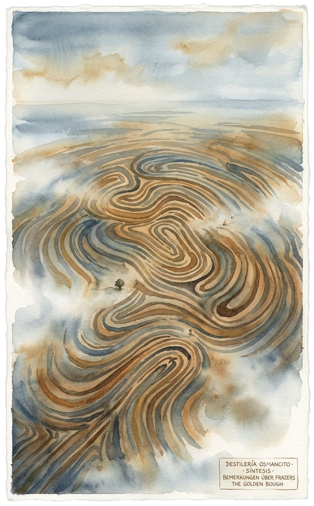
Hay un hombre que se sienta a corregir a otro hombre y, casi seis mil palabras después, ha dejado de corregirlo. No lo dice. No hay un párrafo donde declare la rendición o la conversión. Simplemente, en algún punto entre el rey-sacerdote de Nemi y el pastel con botones, el tono cambia de acusación a confesión, y nadie —ni siquiera quien escribe— marca el lugar exacto donde ocurrió el desplazamiento.
Wittgenstein abre con un veredicto: Frazer está equivocado, su error tiene nombre —tratar la magia como física fallida—, y ese error revela una estrechez de alma, una incapacidad inglesa de imaginar otra forma de vivir. Es una crítica feroz, casi personal, y por un momento el lector espera un tratado: aquí está el error, aquí está la corrección, aquí está el método correcto para sustituir al método errado.
El tratado nunca llega. Lo que llega, en cambio, es un instinto que se reconoce en otro instinto. Wittgenstein golpea su bastón contra la tierra sin creer que la tierra tenga culpa, y en ese gesto —no en ningún argumento— encuentra lo único que para él cuenta como explicación verdadera: no una causa, sino un parentesco. El salvaje que talla su flecha con cuidado mientras atraviesa la imagen de su enemigo no está confundido sobre la física del mundo. Está haciendo, con materiales distintos, lo mismo que hace cualquiera que besa el retrato de su amada o se muerde la lengua al pronunciar un nombre temido.
Esta es la apuesta entera del texto, y es también su límite: cambiar el criterio de verdad de la explicación causal al reconocimiento corporal resuelve la pregunta sobre Frazer, pero abre una pregunta que el texto nunca cierra. Si lo profundo de un rito depende de que el lector encuentre en sí mismo un eco, ¿qué pasa con el rito que no encuentra eco en ningún lector contemporáneo? El texto no lo dice. No puede decirlo sin reintroducir, por la puerta de atrás, el mismo criterio externo que había expulsado por la puerta principal.
Y sin embargo el gesto de no cerrar esa pregunta es, paradójicamente, lo más coherente que el texto podía hacer. Un sistema que desconfía de las explicaciones completas no puede, sin traicionarse, ofrecer una explicación completa de sí mismo. El fragmento no es un accidente de archivo póstumo: es la única forma honesta que esta idea podía tomar. Cualquier conclusión cerrada habría sido, en los propios términos del texto, otra “Erklärung” —y el texto entero existe para mostrar que esa palabra, repetida más que ninguna otra en sus páginas, nombra precisamente lo que no se necesita.
Lo que queda, al cerrar el libro, no es una tesis sobre la magia sino una instrucción silenciosa sobre cómo mirar lo extraño: no preguntando por qué ocurre, sino buscando, en el propio cuerpo, el lugar donde ya ocurre algo parecido. Wittgenstein no resolvió el problema de Frazer. Lo trasladó —de la cabeza del antropólogo a las manos del lector, que ahora tiene que cargar, sin ayuda de ninguna teoría, el peso de reconocerse en el rito ajeno.
Dónde vive la densidad real — No en los argumentos contra Frazer, que son numerosos pero repetitivos, sino en los puntos de contacto entre un ejemplo concreto (el rey de Nemi, el roble, el bastón contra la tierra) y la palabra que lo nombra de golpe (“la majestad de la muerte”, “instinto”, “espíritu común”). Ahí el texto se condensa hasta volverse casi aforismo puro, y ahí es donde el lector siente el peso real del corpus, no en sus pasajes argumentativos extendidos.
Zonas de alta presión — La apertura (la acusación a Frazer, cargada de urgencia personal) y el tramo sobre el instinto y el bastón (donde la teoría se vuelve, por un instante, autobiografía verificable). Zonas de baja presión: los pasajes sobre la hipótesis de desarrollo histórico y la “representación perspicua”, donde el texto se vuelve más técnico, más cauteloso, y pierde el pulso que tiene en otras partes.
Los ejes de tensión que atraviesan el corpus entero — Explicar versus reconocer, ya identificado por Recepción; pero visto en conjunto con Batimetría y Umbral del Reconocimiento, ese eje se revela como una sola tensión con dos caras: el texto necesita un criterio para distinguir lo profundo de lo trivial, y oscila sin resolver entre ofrecer ese criterio como universal (el instinto humano compartido) o admitir que es necesariamente subjetivo (lo que yo reconozco en mí). Nunca elige un lado; vive en el oscilar.
El territorio que el corpus bordea sin cruzar — La pregunta política. El texto disuelve la distancia entre “salvaje” y “civilizado” en el plano del instinto individual, pero nunca toca las consecuencias de that disolución para el colonialismo que hace posible la propia existencia del libro de Frazer como objeto de estudio —cómo llegaron esos relatos a Inglaterra, bajo qué relaciones de poder fueron recolectados. El corpus roza ese territorio cuando llama a Frazer “más salvaje que sus salvajes” y no avanza más.
Batimetría nombró, como capa “ausente”, la falta de una explicación positiva sustitutiva. Márgenes nombró, como pérdida central, la promesa de método que nunca se cobra. Umbral del Reconocimiento nombró, como precio no negociable, la renuncia a la distancia explicativa. Vistos juntos, estos tres hallazgos no describen tres fenómenos distintos: describen el mismo vacío desde tres ángulos, y ese vacío, visto de conjunto, deja de parecer una falla de ejecución y empieza a parecer la tesis misma del texto, nunca formulada como tal porque formularla la habría destruido.
Aquí aparece la contradicción que ningún instrumento individual pudo señalar porque cada uno la vio solo a medias: Recepción describe el corpus como un texto que “no concluye” y lo registra casi como limitación formal; Márgenes describe la pérdida del método como erosión, algo que el texto “no pudo contener”; pero la lectura conjunta muestra que esa misma falta de conclusión es, vista desde la coherencia interna del argumento, la única conclusión posible. No hay error de ejecución que corregir. Lo que cada instrumento percibió como ausencia o pérdida es, mirado en conjunto, la forma necesaria que toma una idea que se niega, por principio, a clausurarse en doctrina. La contradicción —“el texto fracasa en concluir” frente a “el texto no podía concluir sin traicionarse”— no se resuelve aquí. Se nombra como el hallazgo más valioso de este conjunto de lecturas.
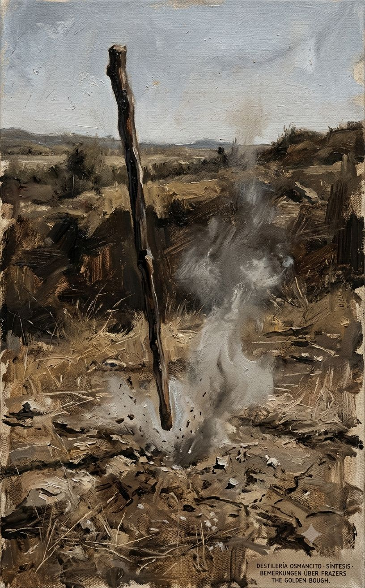
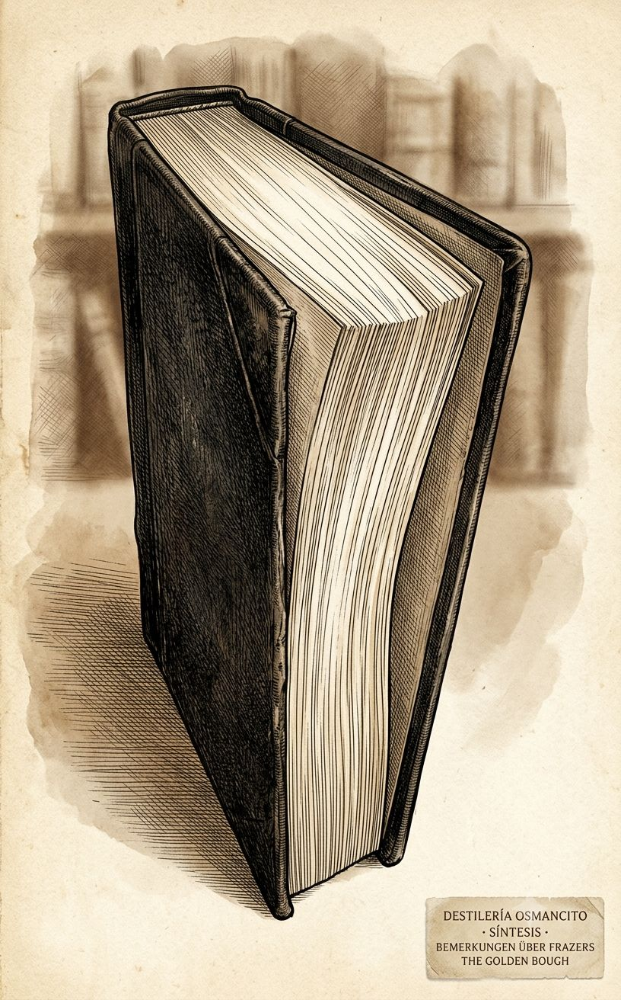
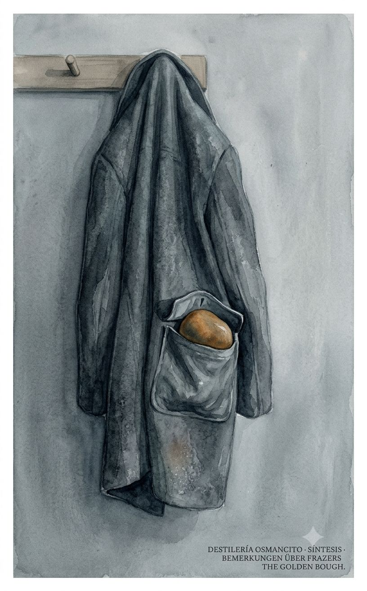
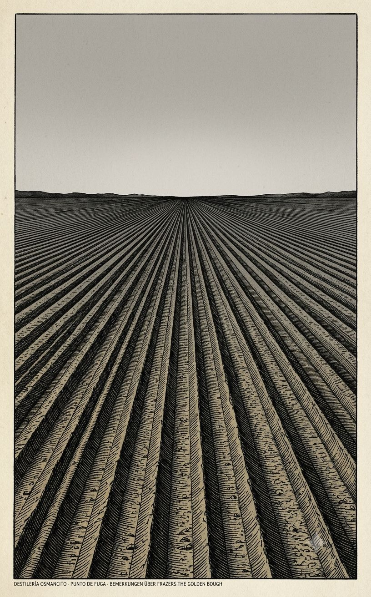
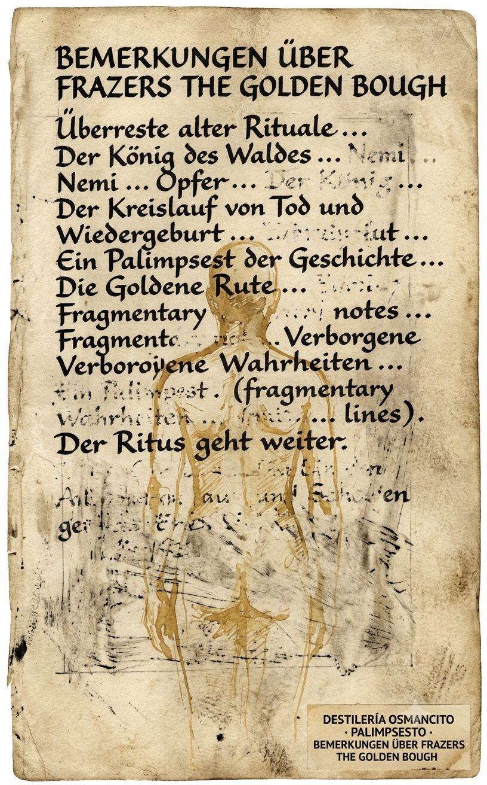
Hay algo que ningún instrumento podía ver porque cada uno estaba mirando, legítimamente, una cosa distinta: este texto, que se presenta como una corrección de la mirada sobre el otro —el salvaje, el rey-sacerdote, el practicante del rito—, termina, en su último fragmento, hablando exclusivamente de sí mismo. No del rito. Del cuerpo de Wittgenstein. De su vergüenza por su “inferioridad física o estética”.
Umbral del Reconocimiento celebró el momento en que Wittgenstein reconoce su propio instinto en el gesto del salvaje como “la explicación deseada” y como la vía hacia un reconocimiento honesto. Márgenes notó que la voz analítica se retira al final y se vuelve confesión, y lo registró como pérdida de tono, casi humanización. Síntesis llamó a esto “trasladar el problema —de la cabeza del antropólogo a las manos del lector”. Los tres tienen razón. Y los tres, al tenerla, dejaron pasar lo mismo sin nombrarlo: en el instante en que el método de Wittgenstein triunfa del todo —cuando logra que el lector reconozca, en su propio cuerpo, lo que antes miraba como extraño en otro— el otro deja de aparecer en la página. El roble, la pulga, el rey de Nemi, la fiesta de Beltane: ninguno regresa después de ese giro. El texto que se propuso rescatar al salvaje de la condescendencia de Frazer termina, en su último gesto, sin hablar del salvaje en absoluto. Habla de Wittgenstein.
Esto no es necesariamente una falla del método —ningún instrumento lo trató como tal, y este texto tampoco lo trata así—. Pero es una estructura que solo se ve cuando los cinco análisis se superponen: la operación que el corpus propone para “salvar” al otro de la explicación causal —encontrar el instinto compartido— tiene como destino final, sin excepción, no el otro sino el que reconoce. El movimiento que comienza apuntando hacia afuera, hacia Frazer y los pueblos que describe, converge siempre, en cada ejemplo del texto, de vuelta hacia el propio Wittgenstein: su bastón, sus labios apretados, y finalmente su vergüenza corporal. El otro fue la ocasión. El verdadero objeto de reconocimiento, desde el primer fragmento, era siempre quien estaba reconociendo.
Ningún instrumento podía nombrar esto porque cada uno necesitaba, para hacer su trabajo, tomar en serio la dirección que el propio texto declara —hacia el rito ajeno, hacia Frazer, hacia el salvaje—. Solo viéndolos juntos se nota que esa dirección declarada y la dirección real del movimiento no coinciden, y que el texto nunca lo sabe de sí mismo.
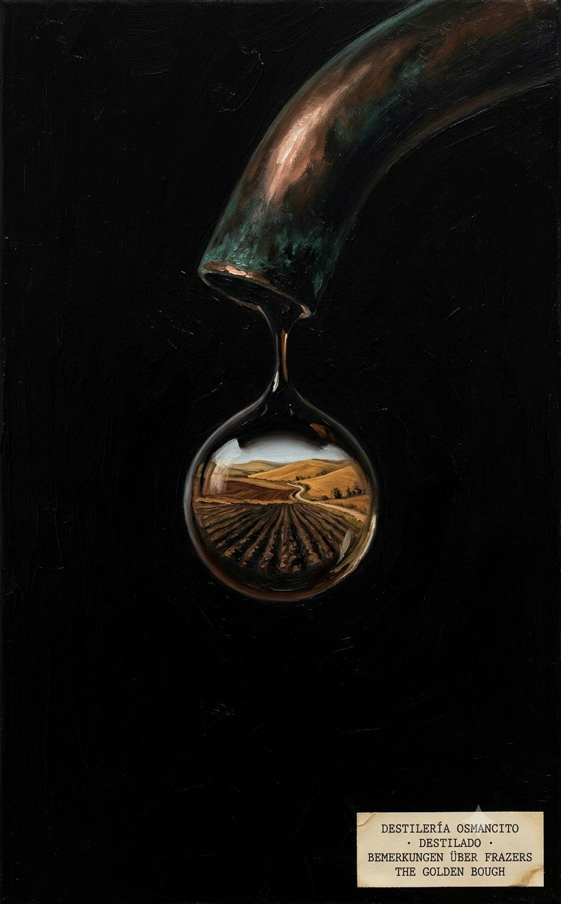
El criterio que el texto usa para distinguir un rito profundo de un rito trivial no es metodológico sino corporal: algo se vuelve profundo cuando el lector encuentra, en su propio instinto, un gesto análogo. — Umbral del Reconocimiento
Explicar y reconocer son, en la lógica interna del texto, operaciones mutuamente excluyentes: no existe la posibilidad de conservar la distancia explicativa y al mismo tiempo acceder a la profundidad de un rito. — Umbral del Reconocimiento
La ferocidad personal contra Frazer en la apertura del texto se disuelve progresivamente sin que el propio texto lo declare en ningún momento; el cambio de tono no es anunciado, es simplemente ejercido. — Márgenes
El método alternativo a la explicación que el texto promete desde su primera línea —“representación perspicua”, “instinto reconocido”, “espíritu común”— nunca se consolida en un procedimiento replicable; la promesa permanece abierta durante todo el recorrido. — Márgenes
Los términos centrales de este texto —“representación perspicua”, “espíritu común”— anticipan, sin saberlo, el vocabulario que la filosofía del lenguaje posterior de Wittgenstein desarrollaría como “parecido de familia” y “juegos de lenguaje”. — Batimetría / Márgenes
La palabra más repetida del corpus es Erklärung —explicación—, la misma noción que el texto entero se propone desmontar: el ataque nunca deja de nombrar a su objetivo. — Recepción
El argumento del texto no avanza por acumulación de evidencia sino por insistencia: vuelve sobre los mismos casos —el rey de Nemi, el roble, el pastel con botones— hasta que dejan de ser ejemplos y empiezan a operar como obsesiones. — Recepción
La pérdida del método prometido no es un defecto que la posteridad del texto haya tenido que superar: es la condición misma de que ese texto pudiera ser apropiado después por lectores de campos distintos —antropología, filosofía del lenguaje, teoría del fragmento. — Márgenes
La dirección declarada del movimiento argumental —hacia el otro, hacia el rito ajeno, hacia Frazer— y la dirección real de ese movimiento —hacia el propio Wittgenstein, hacia su cuerpo, hacia su vergüenza— no coinciden, y el texto no tiene noticia de esa discrepancia en ningún momento de su propio desarrollo. — Palimpsesto
El otro —el salvaje, el rey-sacerdote, el practicante del rito— funciona en este corpus como ocasión y no como destino: cada vez que el argumento alcanza su punto de mayor intensidad, el sujeto que queda en el centro de la atención no es el rito sino quien lo reconoce. — Palimpsesto
Wittgenstein salió a defender al salvaje y volvió hablando de su propio cuerpo.
No hay otra manera de decir esto sin perderlo. No es ironía ni reproche: es la forma exacta que tomó el intento. Un hombre lee a otro hombre describir ritos ajenos como errores de física, y se indigna —con razón, según sus propios términos— porque llamar error a un rito es ya el primer error. Pero la única defensa que logra construir no es una teoría sobre el rito: es el hallazgo de que él mismo, sin magia ni creencia, golpea el suelo con su bastón cuando está enojado y no cree que la tierra tenga culpa. El argumento entero pivotea sobre ese gesto, y desde ahí ya no regresa. El rey-sacerdote de Nemi aparece, se ilumina por un instante bajo la frase “la majestad de la muerte”, y desaparece de la página para no volver. El roble queda atado a la pulga en una sola oración y no se lo vuelve a nombrar. La fiesta de Beltane, el pastel con sus botones escondidos, se enuncian, se examinan brevemente, y se sueltan. Lo único que el texto retiene hasta el final, lo único que sobrevive hasta la última línea escrita, es la vergüenza de Wittgenstein por su propia inferioridad física.
Esto no contradice el método que el texto propone —reconocer el instinto propio en el rito ajeno como vía hacia la comprensión—; es, exactamente, su consecuencia más honesta. Si la profundidad de un rito depende enteramente de que alguien encuentre en sí mismo un eco corporal, entonces el centro de gravedad del pensamiento nunca podía quedarse, finalmente, en el rito. Tenía que migrar, tarde o temprano, hacia quien siente el eco. El texto no fracasa en sostener la mirada sobre el otro: cumple, hasta sus últimas consecuencias, la lógica de un método que solo puede validar lo ajeno volviéndolo, antes que nada, propio. Frazer quería explicar al salvaje desde afuera y fracasó porque la explicación nunca puede tocar lo que explica. Wittgenstein quiso reconocer al salvaje desde dentro y triunfó —pero triunfar así significaba, necesariamente, que el salvaje se disolviera en el acto mismo de ser reconocido, hasta no quedar nada de él que no fuera ya Wittgenstein.
Esa es la honestidad brutal del fragmento que no se completa: no termina porque no sabe cómo seguir hablando del otro una vez que ha encontrado, en sí mismo, todo lo que necesitaba para dejar de necesitarlo.
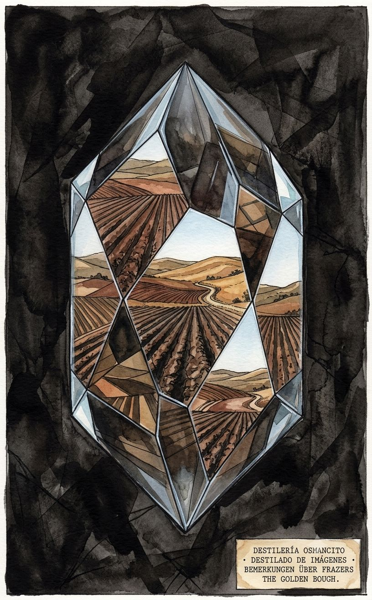
Cuatro imágenes, no más: porque el hallazgo central de todo este análisis es que algo desaparece sin dejar aviso, y un set de imágenes que insistiera más allá de ese número estaría haciendo exactamente lo que el corpus le reprochaba a Frazer — explicar de más lo que solo necesitaba ser mostrado una vez.
Cuatro. Dos hallazgos genuinamente nuevos —ambos producidos por Palimpsesto, los únicos que no podrían haber existido sin la visión del conjunto operando sobre sí misma— y dos imágenes temáticas transversales que encarnan, no el contenido del corpus, sino el eje que atraviesa el análisis entero: el reconocimiento como sustitución del otro por el yo. El resto del inventario —“Erklärung” como palabra más repetida, la disolución del enojo, la herencia en la filosofía del lenguaje posterior— ya tenía forma propia en sus instrumentos de origen y no exige una imagen nueva: ilustrarlo aquí sería redundancia, no revelación.
Grabado a línea fina, tinta sobre papel envejecido — el corpus es un cuaderno de trabajo con tachaduras, no un tratado pulido; la línea fina permite mostrar lo incompleto sin que parezca descuido.
Óleo de capas translúcidas, pinceladas que dejan ver lo de abajo — el hallazgo central es una sustitución progresiva, una cosa cubriendo a otra sin borrarla del todo; el óleo en capas finas puede mostrar el rastro de lo que fue cubierto.
Pastel seco sobre fondo oscuro, formas que emergen y se disuelven — apto para la temperatura emocional de la vergüenza final, lo que aparece solo a media luz.
Elijo óleo de capas translúcidas como estilo dominante del set: es el único que puede encarnar visualmente, sin decirlo, la operación misma que el destilado nombra —algo que estuvo y que el ojo todavía puede rastrear bajo lo que lo sustituyó.
Tierras quemadas, ocres profundos, negro humo diluido —nunca negro puro—, con un solo acento de rojo oscuro casi sangre seca reservado para el cuerpo o el gesto humano. Esta paleta ya gobernaba Víspera y se mantiene como firma del volumen completo.
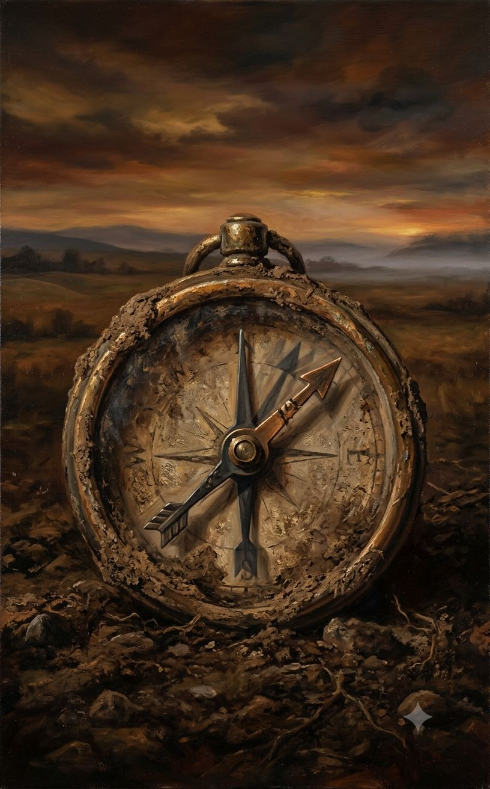
Origen: el hallazgo de Palimpsesto de que la dirección declarada del argumento —hacia el otro— y su dirección real —hacia quien observa— nunca coinciden, sin que el propio texto lo sepa.
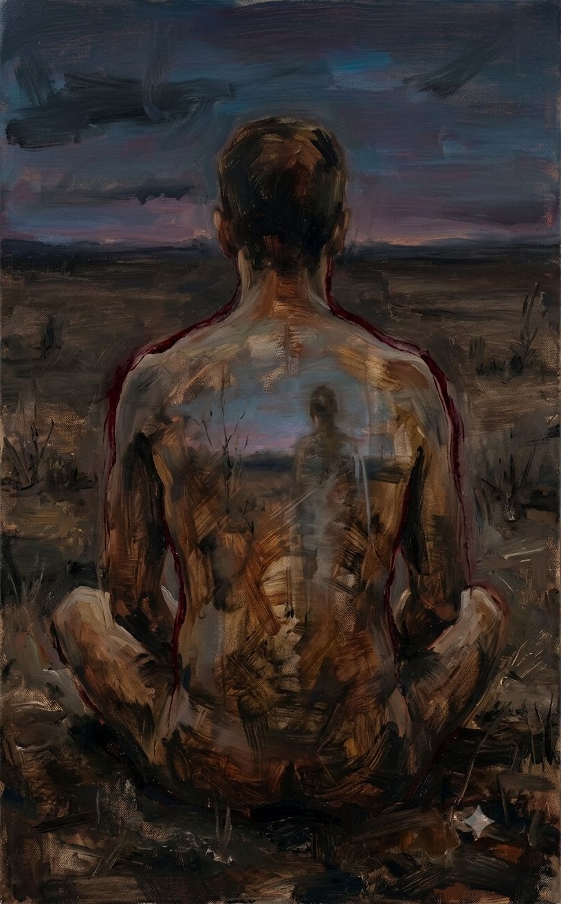
Origen: el hallazgo de Palimpsesto de que el otro —el salvaje, el rey-sacerdote— funciona como ocasión y no como destino: en el punto de mayor intensidad del reconocimiento, el sujeto que queda es quien reconoce, no lo reconocido.
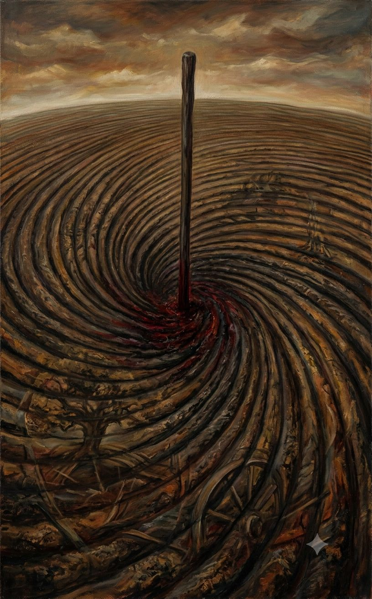
Origen: eje transversal del destilado completo —el gesto de golpear la tierra con el bastón es el único punto de pivote real del corpus, el momento donde la teoría entera deja de avanzar hacia afuera y empieza a girar hacia adentro.
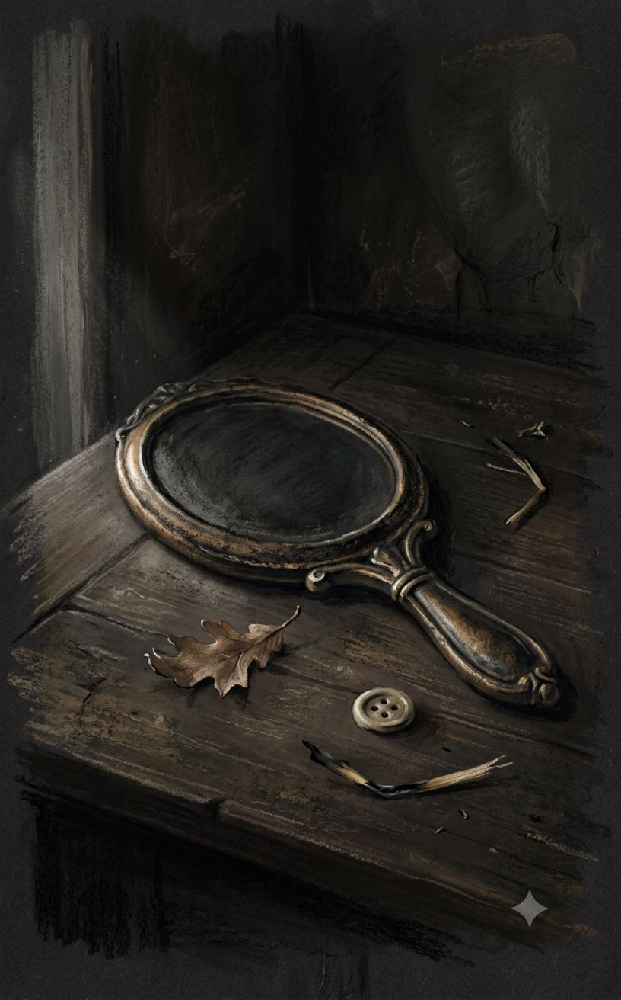
Origen: eje transversal del destilado completo —el corpus termina, sin saberlo, en la vergüenza corporal de quien escribe, el punto exacto donde el método agotó al otro y solo quedó el yo.